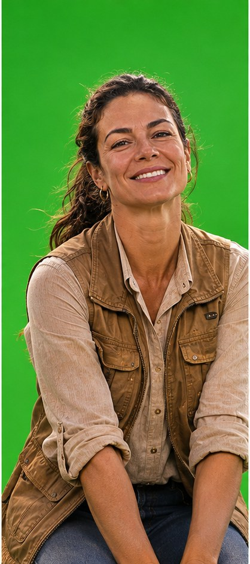
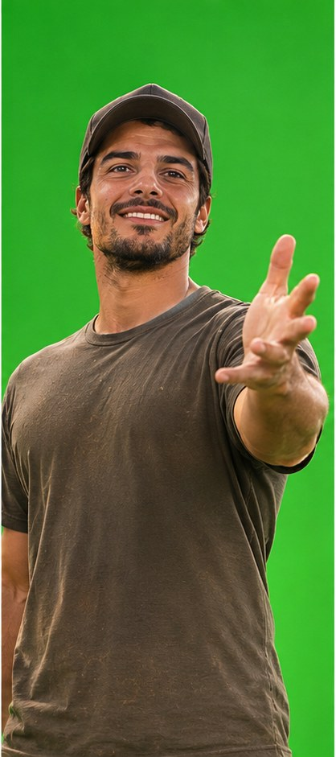
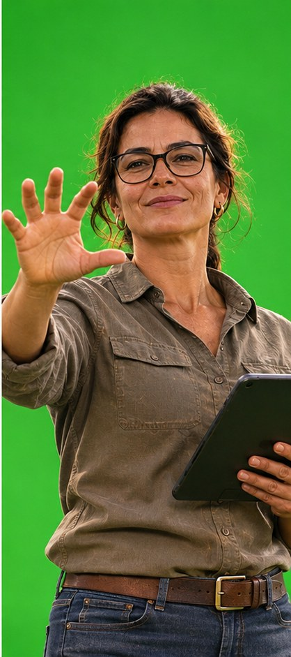

Os 4 temas
Qual é o seu superpoder?

Antes
Pôster
Visionário
Enxerga a safra antes de plantar. A energia dourada desenha a colheita no céu.

Antes
Pôster
Parceiro
Ninguém colhe sozinho. Raízes de luz conectam a lavoura, a família e a equipe.

Antes
Pôster
Desbravador
Abre caminho onde ninguém foi. Cada passo faz a lavoura brotar.

Antes
Pôster
Estrategista
Cada linha no seu lugar. Um holograma planeja a safra no ar.